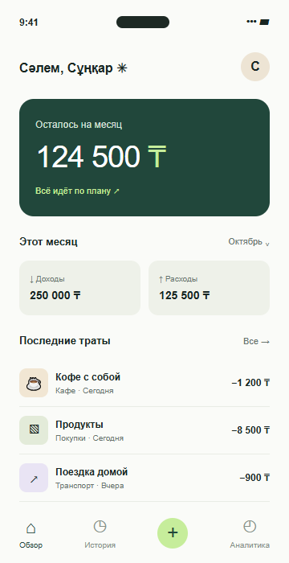
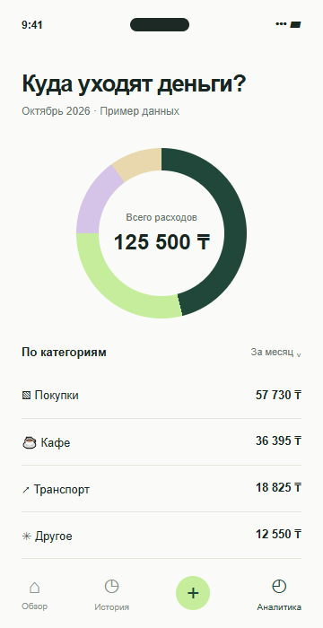
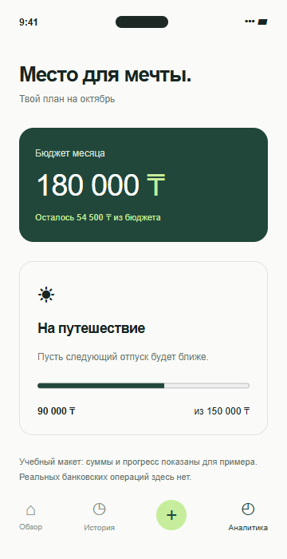

Записывай расходы
Сумма, категория, заметка. Сохрани покупку, пока не забыл о ней.
Кофе с собой1 200 ₸
ЛИЧНЫЕ ФИНАНСЫ. БЕЗ ЛИШНЕГО.
Кофе по пути, продукты на неделю, большая мечта. Дай каждой трате своё место — и увидь, куда уходят деньги.
Учебный концепт приложения · Расчёты в тенге
01 / ВОЗМОЖНОСТИ
В концепте Qarjy всё собрано вокруг простого вопроса: «На что я трачу?»
Сумма, категория, заметка. Сохрани покупку, пока не забыл о ней.
Разделяй расходы по категориям и находи траты, которые легко упустить.
Покупки · Кафе · ТранспортПланируй бюджет и оставляй место для того, что действительно важно.
02 / ВНУТРИ QARJY
Три экрана учебного прототипа. Данные на макетах приведены для примера.

Остаток и недавние покупки.

У каждой траты своя категория.

Бюджет, который виден сразу.
03 / ПРОСТОЙ СТАРТ
Не нужно менять всю жизнь за один день.
Запиши сумму и выбери подходящую категорию.
Сравни повседневные расходы со своим планом.
Определи комфортный бюджет на следующий месяц.
НАЧНИ С МАЛОГО
Попробуй веб-демо учёта покупок: добавляй товары,
меняй количество и следи за общей суммой.